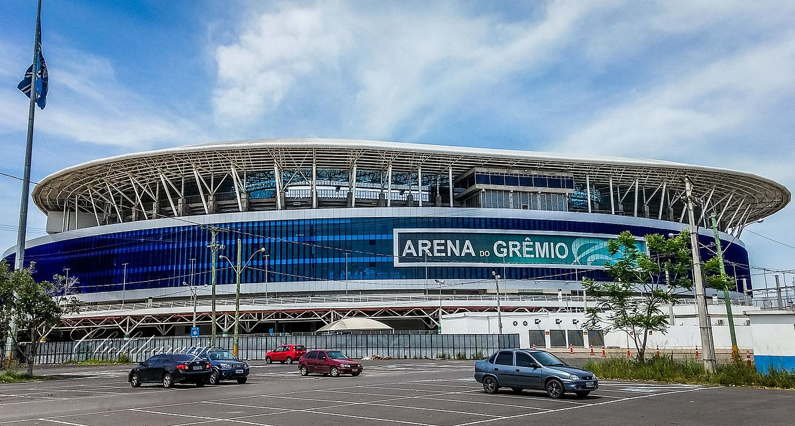

5 Copas do Brasil; 3 Libertadores; 39 Gauchões; 2 Campeonatos Brasileiros; 1 Mundial; 2 Recopas; 1 Supercopa do Brasil; 1 Série B.
15 de setembro de 1903.
1. Grêmio 8x0 Arágua - Copa Sul-Americana - 6 de maio de 2021; 2. Grêmio 6x0 Avenida - Campeonato Gaúcho/Recopa Gaúcha - 10 de fevereiro de 2019; 3. Grêmio 6x1 Avaí - Campeonato Brasileiro - 27 de setembro de 2019; 4. Grêmio 6 x 1 Ayacucho-PER - Libertadores - 10 de março de 2021; 5. Grêmio x Internacional - Campeonato Brasileiro - 9 de agosto de 2015.
19 de setembro de 1954.
8 de dezembro de 2012.
Renato Portaluppi.